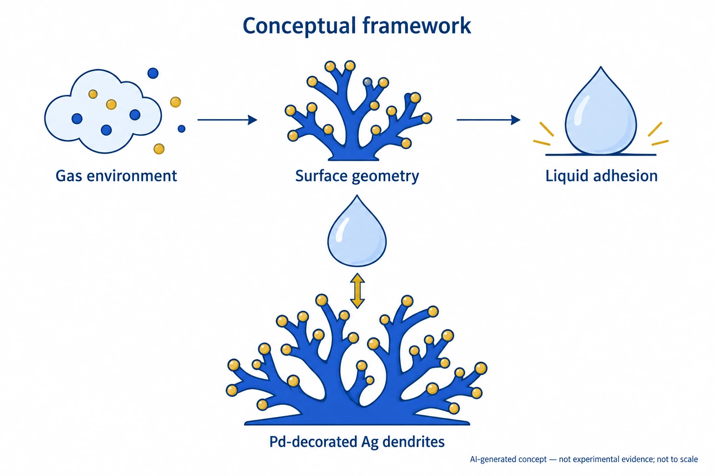

Research context and placement
The public PDF supports gas-driven adhesion switching for several liquids, without biological host-response evidence. Retain host interface-control foundations.
Boundary case: assigned to the closest interface for navigation. Read the rationale and cross-links together; the primary theme does not delimit the study. Placement of foundational work does not establish direct bioelectronic application.
Research overview and key contributions
Gas-responsive Pd/Ag dendrite morphology reversibly switches adhesion of water and lower-surface-tension liquids.
Air/hydrogen switching extends control to oily liquids and links morphology to contact area.

AI-generated, not-to-scale concept showing the relationship among gas environment, surface geometry and liquid adhesion on Pd-decorated Ag dendrites. The concept concerns the PFDT-treated surface studied in the paper; PFDT and the actual coating and particle distribution are omitted. Arrows denote the studied switching concept, not experimental results or perfect reversibility.
Dots, branches, droplets and repeated icons distinguish materials and functions. They do not specify actual gas species, composition or concentration; Pd distribution or coverage; dendrite geometry or size; contact angles, adhesion forces, response time, lifetime, cycle count or operation for every liquid. The double arrow does not depict droplet lifting or levitation, and the repeated droplet icons do not compare two samples or before-and-after results.
This is not a reproduced paper figure and does not establish permission to reuse the original figure.
Generated in ChatGPT on the web from concepts within the stated public-evidence scope and independently reviewed as a concept. This is not verification of the complete article body or supplementary information. Only display WebP encoding was applied, without cropping, resizing or content editing.
Open challenges
The body identifies excessive Pd deposition and oil wetting as a boundary that eliminates reversibility.
Comparison context
Match surface tension, volume, Pd coverage, gas composition and cycles; distinguish force from contact angle.
Related external research
Bioinspired self-repairing slippery surfaces with pressure-stable omniphobicity
SLIPS repellency is a candidate for later adhesion-switching comparison.
Passive repellency and gas-actuated switching serve different aims; contact angle alone cannot rank them.
Abstract checkedCorresponding-author verification
Jungmok Seo: not a corresponding authorThis record concerns Jungmok Seo’s correspondence designation. Author order or an asterisk alone is not treated as confirmation; this check is separate from verification of the research content.
- Correspondence evidence source ↗
Taeyoon Lee*,†; AUTHOR INFORMATION; Corresponding Author; *E-mail: [omitted].
p.4964 author line and p.4970 AUTHOR INFORMATION / Corresponding Author (PDF pages 1, 7) · Named publisher author/correspondence information or public published-PDF contact block read; selected body/figure scope is recorded separately.
- Main-text review scope
- Selected body discussion, copyright notice and complete selected-figure caption read in public author-hosted published PDF; selected figure visually inspected. Supplements not audited.
- Supplementary review scope
- Not read in this figure/correspondence pass; no complete SI audit claimed.
- Pending verification
- Check supplementary videos, cycling, surface lifetime and reuse rights in school Chrome. This pass verifies figure rights and correspondence roles. Selected-body/abstract review does not establish completion of full methods and supplementary-material review. The paper is not a verified Jungmok Seo correspondence paper and is outside this deepening priority.
COVERAGE & OUTREACH
Coverage and outreach
Links are checked for their relationship to this paper. Media publication does not establish independent reporting or additional experimental validation.
No related outreach link was verified against its body within these searches. This does not establish that none exists.
Unverified candidates and access limits (1)
Unverified candidate · [Acceptance] “Reversible liquid adhesion switching of superamphiphobic Pd-decorated Ag dendrites via gas-induced structural changes” ↗
Search exposed an acceptance announcement with the exact paper title, but its body could not be verified.
Body access limited The individual URL returned a retrieval error; the related Board page showed a human-verification gate. No bypass was attempted and the date remains unverified.
Sources and verification scope
After ACS retrieval failed, the author-hosted abstract, introduction and wetting/switching results were read; supplements remain unchecked.
- Public publication baseline ↗ · #25 · 2026-10-03
- Crossref metadata ↗: Only public bibliographic metadata registered with Crossref was checked. This does not mean that the publisher page, abstract, or full text was read; full-text verification in the school Chrome session remains pending. No license link is present in Crossref; redistribution rights have not been established.
- ACS publisher abstract ↗
retrieval_failed · Web retrieval: Internal Error; no complete abstract returned; checked 2026-10-03 - Author-hosted published Chemistry of Materials article ↗
public_author_hosted_pdf_selected_sections · PDF p.1 abstract/introduction; pp.3–7 selected wetting, morphology and adhesion-switching results/conclusion; DOI confirmed; checked 2026-10-03